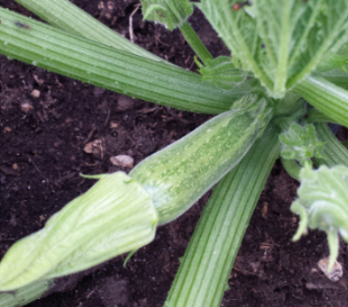

Zucchine

Coltivare in terreno molto ricco di materia organica e non coltivare dopo Solanacee o piante della stessa
famiglia delle cucurbitacee.
- Varietà: Zucchina chiara di Faenza
- Periodo di semina: Marzo / Aprile
- Primo raccolto: Fine Aprile
- Ultimo raccolto: Fine Luglio
- Raccolto:
| Dimensione | Quantità |
|---|---|
| Piccole (10cm) | 16 |
| Medie (11-16cm) | 26 |
| Grandi (>16cm) | 16 |
| 51 |
Piselli

Consigli
- piantare in semenzaio riscaldato E' importante:
- Acquistare vasetti biodegradabili (di cocco o cartone)
- Mantenere areato il semenzaio per evitare muffe
- Non usare il coperchio del semenzaio
- Non usare mettere il semenzaio vicino al termosifone
- Fissare i sostegni nel terreno non appena le piantine raggiungono i 10cm
- Acquistare una rete con spazi di non più 10cm per garantire sostegni adeguati